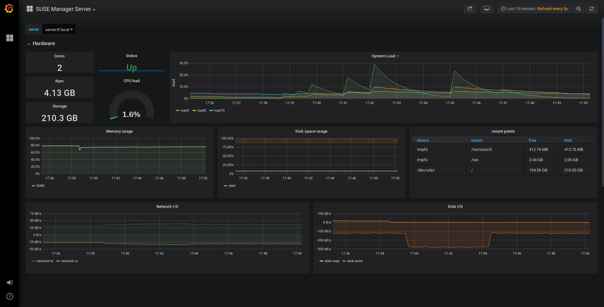

Prometheus 및 Grafana를 사용한 모니터링
Prometheus 및 Grafana를 사용하여 Uyuni 환경을 모니터링할 수 있습니다. Uyuni 서버 및 프록시는 자체 상태 메트릭을 제공할 수 있습니다. 또한, Salt 클라이언트에서 여러 Prometheus 엑스포트를 설치 및 관리할 수 있습니다.
Prometheus 및 Grafana 패키지가 Uyuni 클라이언트 도구에 포함된 대상은 다음과 같습니다.
-
SUSE Linux Enterprise 12
-
SUSE Linux Enterprise 15
-
openSUSE Leap 15.x
Uyuni 서버와 별도의 시스템에 Prometheus 및 Grafana를 설치해야 합니다. 모니터링 서버로 관리되는 Salt SUSE 클라이언트를 사용하는 것이 좋습니다. 다른 클라이언트는 모니터링 서버로 지원되지 않습니다.
Prometheus는 풀 방식을 사용하여 메트릭을 가져오므로 서버는 모니터링되는 클라이언트에 대한 TCP 연결을 설정할 수 있어야 합니다. 클라이언트에는 해당하는 열린 포트가 있어야 하며 네트워크를 통해 연결할 수 있어야 합니다. 또는, 역방향 프록시를 사용하여 연결을 설정할 수 있습니다.
1. Prometheus 및 Grafana
1.1. Prometheus
Prometheus는 시계열 데이터베이스에 실시간 메트릭을 기록하기 위해 사용되는 오픈 소스 모니터링 도구입니다. 메트릭은 HTTP를 통해 끌어오며, 고성능과 확장성을 가능하게 합니다.
Prometheus 메트릭은 시계열 데이터 또는 동일한 그룹 또는 차원에 속하는 타임스탬프 값입니다. 메트릭은 이름과 레이블 집합으로 고유하게 식별됩니다.
메트릭 이름 레이블 타임스탬프 값
┌────────┴───────┐ ┌───────────┴───────────┐ ┌──────┴──────┐ ┌─┴─┐
http_requests_total{status="200", method="GET"} @1557331801.111 42236
모니터링되는 각 애플리케이션 또는 시스템은 코드 계측 또는 Prometheus 엑스포트를 통해 위의 형식으로 메트릭을 노출해야 합니다.
1.2. Prometheus 엑스포트
엑스포트는 타사 시스템의 메트릭을 Prometheus 메트릭으로 엑스포트할 때 유용하게 사용할 수 있는 라이브러리입니다. 엑스포트는 Prometheus 메트릭을 사용하여 특정 애플리케이션 또는 시스템을 직접 계측하는 것이 불가능할 때마다 유용합니다. 모니터링되는 호스트에서 여러 엑스포트를 실행하여 로컬 메트릭을 엑스포트할 수 있습니다.
Prometheus 커뮤니티는 공식 엑스포트 목록을 제공하며, 커뮤니티 기여를 통해 더욱 추가될 것입니다. 자세한 내용과 광범위한 엑스포트 목록은 https://prometheus.io/docs/instrumenting/exporters/에서 확인할 수 있습니다.
1.3. Grafana
Grafana는 데이터 시각화, 모니터링 및 분석을 위한 도구입니다. 그리고 일정 기간 동안 특정 메트릭을 나타내는 패널이 포함된 대시보드를 생성하기 위한 용도로 사용됩니다. 일반적으로 Grafana는 Prometheus와 함께 사용되지만, ElasticSearch, MySQL, PostgreSQL 및 Influx DB와 같은 다른 데이터 소스도 지원합니다. Grafana에 대한 자세한 내용은 https://grafana.com/docs/에서 확인할 수 있습니다.
2. 모니터링 서버 설정
모니터링 서버를 설정하려면 Prometheus와 Grafana를 설치 및 구성해야 합니다.
2.1. Prometheus 설치
모니터링 서버가 Salt 클라이언트인 경우 Uyuni Web UI를 사용하여 Prometheus 패키지를 설치할 수 있습니다. 그렇지 않으면 모니터링 서버에 패키지를 수동으로 다운로드하여 설치할 수 있습니다. Prometheus 소프트웨어는 Uyuni 프록시 및 Uyuni for Retail 분기 서버에서도 사용할 수 있습니다.
|
데이터를 저장하려면 Prometheus에 POSIX 파일 시스템이 필요합니다. POSIX 호환 파일 시스템이 아닌 파일 시스템은 지원되지 않습니다. NFS 파일 시스템은 지원되지 않습니다. |
-
Uyuni Web UI에서 Prometheus를 설치할 시스템의 세부 사항 페이지를 열고
수식탭으로 이동합니다. -
Prometheus확인란을 선택하여 모니터링 수식을 활성화하고 저장을 클릭합니다. -
상단 메뉴의
Prometheus탭으로 이동합니다. -
Uyuni 서버섹션에 유효한 Uyuni API 자격 증명을 입력합니다. 입력한 자격 증명이 모니터링 대상 시스템 집합에 대한 액세스를 허용하는지 확인합니다. -
필요에 따라 기타 구성 옵션을 사용자 정의합니다.
-
수식 저장을 클릭합니다.
-
highstate를 적용하고 성공적으로 완료되었는지 확인합니다.
-
Prometheus 인터페이스를 올바르게 로드했는지 확인합니다. 브라우저에서 9090 포트 Prometheus가 설치된 서버의 URL(예:
http://example.com:9090)로 이동합니다.
수식 모니터링에 대한 자세한 내용은 Monitoring Formula에서 참조하십시오.
-
모니터링 서버에서
golang-github-prometheus-prometheus패키지 설치:zypper in golang-github-prometheus-prometheus
-
Prometheus 서비스를 활성화합니다.
systemctl enable --now prometheus
-
Prometheus 인터페이스가 올바르게 로드되는지 확인합니다. 브라우저에서, 9090 포트(예:
http://example.com:9090)에서 Prometheus가 설치된 서버의 URL로 이동합니다. -
/etc/prometheus/prometheus.yml에서 구성 파일을 열고 이 구성 정보를 추가합니다.server.url을 Uyuni 서버 URL로 바꾸고 Uyuni 자격 증명과 일치하도록사용자 이름및비밀번호필드를 조정합니다.# {productname} self-health metrics scrape_configs: - job_name: 'mgr-server' static_configs: - targets: - 'server.url:9100' # Node exporter - 'server.url:9187' # PostgreSQL exporter - 'server.url:5556' # JMX exporter (Tomcat) - 'server.url:5557' # JMX exporter (Taskomatic) - 'server.url:9800' # Taskomatic - targets: - 'server.url:80' # Message queue labels: __metrics_path__: /rhn/metrics # 관리되는 시스템 메트릭: - job_name: 'mgr-clients' uyuni_sd_configs: - server: "http://server.url" username: "admin" password: "admin" relabel_configs: - source_labels: [__meta_uyuni_exporter] target_label: exporter - source_labels: [__address__] replacement: "No group" target_label: groups - source_labels: [__meta_uyuni_groups] regex: (.+) target_label: groups - source_labels: [__meta_uyuni_minion_hostname] target_label: hostname - source_labels: [__meta_uyuni_primary_fqdn] regex: (.+) target_label: hostname - source_labels: [hostname, __address__] regex: (.*);.*:(.*) replacement: ${1}:${2} target_label: __address__ - source_labels: [__meta_uyuni_metrics_path] regex: (.+) target_label: __metrics_path__ - source_labels: [__meta_uyuni_proxy_module] target_label: __param_module - source_labels: [__meta_uyuni_scheme] target_label: __scheme__ -
구성 파일을 저장합니다.
-
Prometheus 서비스를 재시작합니다.
systemctl restart prometheus
Prometheus 구성 옵션에 대한 자세한 내용은 URL[https://prometheus.io/docs/prometheus/latest/configuration/configuration/]의 공식 Prometheus 설명서에서 확인할 수 있습니다.
2.2. Grafana 설치
모니터링 서버가 Salt 클라이언트인 경우 Uyuni Web UI를 사용하여 Grafana 패키지를 설치할 수 있습니다. 그렇지 않으면 모니터링 서버에 패키지를 수동으로 다운로드하여 설치할 수 있습니다.
|
Grafana는 Uyuni 프록시에서 사용할 수 없습니다. |
-
Uyuni Web UI에서 Grafana를 설치할 시스템의 세부 사항 페이지를 열고
수식탭으로 이동합니다. -
모니터링 수식을 활성화하려면
Grafana확인란을 선택하고 저장을 클릭합니다. -
상단 메뉴의
Grafana탭으로 이동합니다. -
Grafana 활성화 및 구성섹션에서 Grafana에 로그인하기 위해 사용할 관리자 자격 증명을 입력합니다. -
데이터 소스섹션에서 Prometheus URL 필드가 Prometheus를 실행 중인 시스템을 가리키는지 확인합니다. -
필요에 따라 기타 구성 옵션을 사용자 정의합니다.
-
수식 저장을 클릭합니다.
-
highstate를 적용하고 성공적으로 완료되었는지 확인합니다.
-
Grafana 인터페이스를 올바르게 로드했는지 확인합니다. 브라우저에서 3000 포트 Grafana가 설치된 서버의 URL(예:
http://example.com:3000)로 이동합니다.
|
Uyuni는 서버 자체 상태, 기본 클라이언트 모니터링 등을 위해 사전 빌드된 대시보드를 제공합니다. 수식 구성 페이지에서 프로비저닝할 대시보드를 선택할 수 있습니다. |
-
grafana패키지를 설치합니다.zypper in grafana
-
Grafana 서비스를 활성화합니다.
systemctl enable --now grafana-server
-
브라우저에서 3000 포트 Grafana가 설치된 서버의 URL(예:
http://example.com:3000)로 이동합니다. -
로그인 페이지에서 사용자 이름과 비밀번호에
admin을 입력합니다. -
로그인을 클릭합니다. 로그인에 성공하면 비밀번호를 변경하라는 메시지가 표시됩니다.
-
메시지가 표시되면 확인을 클릭한 후 비밀번호를 변경합니다.
-
구성 옵션이 표시되는 사이드 메뉴의 톱니바퀴 아이콘으로 커서를 이동합니다.

-
데이터 소스를 클릭합니다.
-
지원되는 모든 데이터 소스 목록을 확인하려면 데이터 소스 추가를 클릭합니다.
-
Prometheus 데이터 소스를 선택합니다.
-
Prometheus 서버의 올바른 URL을 지정해야 합니다.
-
저장 및 테스트을 클릭합니다.
-
대시보드를 임포트하려면 사이드 메뉴에서 + 아이콘을 클릭한 후 임포트를 클릭합니다.
-
Uyuni 서버 개요의 경우 대시보드 ID:
17569를 로드합니다. -
Uyuni 클라이언트 개요의 경우 대시보드 ID:
17570을 로드합니다.
|
3. Uyuni 모니터링 구성
Uyuni 4 이상을 사용하면 서버가 Prometheus 자체 상태 메트릭을 노출하도록 설정하고 클라이언트 시스템에 엑스포트를 설치 및 구성할 수도 있습니다.
3.1. 서버 자체 모니터링
서버 자체 상태 메트릭에는 하드웨어, 운영 체제 및 Uyuni 내부가 포함됩니다. 이러한 메트릭은 Prometheus 엑스포트와 결합된 Java 애플리케이션의 계측을 통해 사용할 수 있습니다.
Uyuni 서버와 함께 제공되는 엑스포트 패키지는 다음과 같습니다.
-
노드 엑스포트:
golang-github-prometheus-node_exporter. https://github.com/prometheus/node_exporter를 참조하십시오. -
PostgreSQL 엑스포트:
prometheus-postgres_exporter. https://github.com/wrouesnel/postgres_exporter를 참조하십시오. -
JMX 엑스포트:
prometheus-jmx_exporter. https://github.com/prometheus/jmx_exporter를 참조하십시오. -
Apache 엑스포트:
golang-github-lusitaniae-apache_exporter. https://github.com/Lusitaniae/apache_exporter를 참조하십시오.
Uyuni 프록시와 함께 제공되는 엑스포트 패키지:
-
노드 엑스포트:
golang-github-prometheus-node_exporter. https://github.com/prometheus/node_exporter를 참조하십시오. -
Squid 엑스포트:
golang-github-boynux-squid_exporter. https://github.com/boynux/squid-exporter를 참조하십시오.
엑스포트 패키지는 Uyuni 서버 및 프록시에 미리 설치되어 있지만, 각 시스템 데몬은 기본적으로 비활성화되어 있습니다.
-
Uyuni Web UI에서 으로 이동합니다.
-
서비스 활성화를 클릭합니다.
-
Tomcat 및 Taskomatic을 재시작합니다.
-
9090 포트 Prometheus 서버의 URL(예:
http://example.com:9090)로 이동합니다. -
Prometheus UI에서 으로 이동하여
mgr-server그룹의 모든 엔드포인트가 작동 중인지 확인합니다. -
Web UI와 함께 Grafana도 설치한 경우 Uyuni 서버 대시보드에 유용한 서버 정보가 표시됩니다.

|
Web UI를 사용하여 서버 자체 상태 모니터링만 활성화할 수 있습니다. Prometheus는 프록시에 대한 메트릭을 자동으로 수집하지 않습니다. 프록시에서 자체 상태 모니터링을 활성화하려면 엑스포트를 수동으로 설치 및 활성화해야 합니다. |
Uyuni 서버에서 수집되는 관련 메트릭은 다음과 같습니다.
| 메트릭 | 유형 | 설명 |
|---|---|---|
uyuni_all_systems |
게이지 |
전체 시스템 수 |
uyuni_virtual_systems |
게이지 |
가상 시스템 수 |
uyuni_inactive_systems |
게이지 |
비활성 시스템 수 |
uyuni_outdated_systems |
게이지 |
오래된 패키지가 있는 시스템 수 |
| 메트릭 | 유형 | 설명 |
|---|---|---|
pg_stat_database_tup_fetched |
counter |
쿼리에 의해 패치되는 행의 수 |
pg_stat_database_tup_inserted |
counter |
쿼리에 의해 삽입되는 행의 수 |
pg_stat_database_tup_updated |
counter |
쿼리에 의해 업데이트되는 행의 수 |
pg_stat_database_tup_deleted |
counter |
쿼리에 의해 삭제되는 행의 수 |
mgr_serveractions_completed |
gauge |
완료된 작업의 수 |
mgr_serveractions_failed |
gauge |
실패한 작업의 수 |
mgr_serveractions_picked_up |
gauge |
선택된 작업의 수 |
mgr_serveractions_queued |
gauge |
대기열에 추가된 작업의 수 |
| 메트릭 | 유형 | 설명 |
|---|---|---|
java_lang_Threading_ThreadCount |
gauge |
활성 스레드의 수 |
java_lang_Memory_HeapMemoryUsage_used |
gauge |
현재 힙 메모리 사용량 |
| 메트릭 | 유형 | 설명 |
|---|---|---|
message_queue_thread_pool_threads |
counter |
생성된 메시지 대기열 스레드의 수 |
message_queue_thread_pool_threads_active |
gauge |
현재 활성 메시지 대기열 스레드의 수 |
message_queue_thread_pool_task_count |
counter |
제출된 태스크의 수 |
message_queue_thread_pool_completed_task_count |
counter |
완료된 태스크의 수 |
| 메트릭 | 유형 | 설명 |
|---|---|---|
taskomatic_scheduler_threads |
counter |
생성된 스케줄러 스레드의 수 |
taskomatic_scheduler_threads_active |
gauge |
현재 활성 스케줄러 스레드의 수 |
taskomatic_scheduler_completed_task_count |
counter |
완료된 태스크의 수 |
3.2. 관리되는 시스템 모니터링
Prometheus 메트릭 엑스포트는 수식을 사용하여 Salt 클라이언트에 설치 및 구성할 수 있습니다. 패키지는 Uyuni 클라이언트 도구 채널에서 사용할 수 있으며 Uyuni Web UI에서 직접 활성화 및 구성할 수 있습니다.
다음 엑스포트는 관리되는 시스템에 설치할 수 있습니다.
-
노드 엑스포트:
golang-github-prometheus-node_exporter. https://github.com/prometheus/node_exporter를 참조하십시오. -
PostgreSQL 엑스포트:
prometheus-postgres_exporter. https://github.com/wrouesnel/postgres_exporter를 참조하십시오. -
Apache 엑스포트:
golang-github-lusitaniae-apache_exporter. https://github.com/Lusitaniae/apache_exporter를 참조하십시오.
|
SLE Micro에서는 노드 엑스포트와 블랙박스 엑스포트만 사용할 수 있습니다. |
엑스포트를 설치 및 구성한 후에는 Prometheus를 사용하여 모니터링 중인 시스템에서 메트릭을 수집할 수 있습니다. Web UI로 모니터링 서버를 구성한 경우 메트릭이 자동으로 수집됩니다.
-
Uyuni Web UI에서 모니터링할 클라이언트의 세부 사항 페이지를 열고 수식 탭으로 이동합니다.
-
Prometheus 엑스포트수식에서활성화됨확인란을 선택합니다. -
저장을 클릭합니다.
-
탭으로 이동합니다.
-
활성화할 엑스포트를 선택하고 필요에 따라 인수를 사용자 정의합니다.
주소필드에는 콜론이 앞에 오는 포트 번호(:9100) 또는 완전히 확인할 수 있는 주소(example:9100)를 사용할 수 있습니다. -
수식 저장을 클릭합니다.
-
highstate를 적용합니다.

|
해당 그룹 내의 개별 시스템에 사용된 동일한 구성을 적용하여 시스템 그룹에 대한 모니터링 수식을 구성할 수도 있습니다. |
수식 모니터링에 대한 자세한 내용은 Monitoring Formula에서 참조하십시오.
3.3. Grafana 비밀번호 변경
Grafana 비밀번호를 변경하려면 Grafana 설명서에 설명된 단계를 따릅니다.
Grafana 관리자 비밀번호를 분실한 경우 다음 명령을 사용하여 root로 재설정할 수 있습니다.
grafana-cli --configOverrides cfg:default.paths.data=/var/lib/grafana --homepath /usr/share/grafana admin reset-admin-password <new_password>
4. 네트워크 경계
Prometheus는 풀 방식을 사용하여 메트릭을 가져오므로 서버는 모니터링되는 클라이언트에 TCP 연결을 설정할 수 있어야 합니다. 기본적으로 Prometheus에서 사용되는 포트입니다.
-
노드 엑스포트: 9100
-
PostgreSQL 엑스포트: 9187
-
Apache 엑스포트: 9117
추가적으로, Prometheus를 실행하는 호스트가 아닌 다른 호스트에서 경고 관리자를 실행하는 경우 9093 포트도 열어야 합니다.
클라우드 인스턴스에 설치된 클라이언트의 경우 모니터링 서버에 대한 액세스 권한이 있는 보안 그룹에 필요한 포트를 추가할 수 있습니다.
또는 엑스포트의 로컬 네트워크에 Prometheus 인스턴스를 배포하고 페더레이션을 구성할 수 있습니다. 이를 통해 기본 모니터링 서버가 로컬 Prometheus 인스턴스에서 시계열을 스크랩할 수 있습니다. 이 방법을 사용하는 경우 Prometheus API 포트인 9090 포트만 열면 됩니다.
Prometheus 페더레이션에 대한 자세한 내용은 https://prometheus.io/docs/prometheus/latest/federation/에서 확인할 수 있습니다.
네트워크 경계를 통해 요청을 프록시할 수도 있습니다. PushProx와 같은 도구는 네트워크 장벽의 양쪽에 프록시와 클라이언트를 배포하고 Prometheus가 NAT와 같은 네트워크 토폴로지에서 작동할 수 있도록 합니다.
PushProx에 대한 자세한 내용은 https://github.com/RobustPerception/PushProx에서 확인할 수 있습니다.
4.1. 역방향 프록시 설정
Prometheus는 풀 방식을 사용하여 메트릭을 가져오므로, 서버는 모니터링되는 클라이언트의 각 엑스포트에 대한 TCP 연결을 설정할 수 있어야 합니다. 방화벽 구성을 단순화하기 위해 엑스포트에 역방향 프록시를 사용하여 단일 포트의 모든 메트릭을 노출할 수 있습니다.
-
Uyuni Web UI에서 모니터링할 시스템의 세부 사항 페이지를 열고
수식탭으로 이동합니다. -
Prometheus 엑스포트확인란을 선택하여 엑스포트 수식을 활성화하고 저장을 클릭합니다. -
상단 메뉴에서
Prometheus 엑스포트탭으로 이동합니다. -
역방향 프록시 활성화옵션을 확인하고 유효한 역방향 프록시 포트 번호를 입력합니다. 예를 들어,9999입니다. -
필요에 따라, 다른 엑스포트를 사용자 정의합니다.
-
수식 저장을 클릭합니다.
-
highstate를 적용하고 성공적으로 완료되었는지 확인합니다.
수식 모니터링에 대한 자세한 내용은 Monitoring Formula에서 참조하십시오.
5. 보안
Prometheus 서버 및 Prometheus 노드 엑스포트는 TLS 암호화 및 인증으로 엔드포인트를 보호하는 기본 제공 방법을 제공합니다. Uyuni Web UI는 관련된 모든 구성요소의 구성을 간소화합니다. TLS 인증서는 사용자가 제공하고 배포해야 합니다. Uyuni에서 지원하는 보안 모델은 다음과 같습니다.
-
노드 엑스포트: TLS 암호화 및 클라이언트 인증서 기반 인증
-
Prometheus: TLS 암호화 및 기본 인증
사용 가능한 모든 옵션 구성에 대한 자세한 내용은 Monitoring Formula에서 확인할 수 있습니다.
5.1. TLS 인증서 생성
기본적으로 Uyuni는 모니터링 구성을 보호하기 위한 인증서를 제공하지 않습니다. 보안을 제공하기 위해 자체 서명되거나 타사 인증 기관(CA)에서 서명한 사용자 지정 인증서를 생성하거나 임포트할 수 있습니다.
이 섹션에서는 SUSE Manager CA를 사용하여 자체 서명된 Prometheus 및 노드 엑스포트 미니언에 대한 클라이언트/서버 인증서를 생성하는 방법을 설명합니다.
-
Uyuni 서버의 명령 프롬프트에서 다음 명령을 실행합니다.
rhn-ssl-tool --gen-server --dir="/root/ssl-build" --set-country="COUNTRY" \ --set-state="STATE" --set-city="CITY" --set-org="ORGANIZATION" \ --set-org-unit="ORGANIZATION UNIT" --set-email="name@example.com" \ --set-hostname="minion.example.com" --set-cname="minion.example.com" --no-rpm
set-cname파라미터가 Salt 클라이언트의 FQDN(정규화된 도메인 이름)인지 확인합니다. 여러 별칭이 필요한 경우set-cname파라미터를 여러 번 사용할 수 있습니다. -
server.crt및server.key파일을 Salt 미니언에 복사하고prometheus사용자에게 읽기 액세스 권한을 부여합니다.